8 Superposition
Stationary waves, diffraction, interference and the diffraction grating
Learning objectives
By the end of this chapter, you should be able to:
- state and apply the principle of superposition;
- explain the formation of stationary waves and use node/antinode spacing;
- compare transverse and longitudinal stationary waves;
- describe diffraction and identify the conditions for significant diffraction;
- explain two-source interference and use the double-slit equation;
- use the diffraction grating equation \(d\sin\theta=n\lambda\).
8.1 Stationary waves
Principle of superposition
When two (or more) waves meet at a point, the resultant displacement is the vector sum of the individual displacements. This is the principle of superposition.
If the displacements add to give a larger amplitude, the waves interfere constructively; if they cancel, the interference is destructive.
Formation of a stationary wave
A stationary (standing) wave is formed when two progressive waves of the same frequency, wavelength and amplitude travel in opposite directions through the same medium and superpose.
Points of zero displacement are nodes; points of maximum displacement are antinodes. Adjacent nodes (or antinodes) are separated by half a wavelength. Energy is not transferred along a stationary wave.
Stationary waves on strings and in tubes
For a string fixed at both ends, the fundamental mode has one loop:
\[L=\frac{\lambda}{2}.\]
For a tube closed at one end, the fundamental has a node at the closed end and an antinode at the open end:
\[L=\frac{\lambda}{4}.\]
The speed of the wave is \(v=f\lambda\). In a closed tube, the allowed frequencies are the odd harmonics \(f\), \(3f\), \(5f\), \(\dots\); in an open tube all harmonics \(f\), \(2f\), \(3f\), \(\dots\) are allowed.
Stationary sound waves
In a stationary sound wave in air, nodes and antinodes of displacement correspond to antinodes and nodes of pressure. The maximum pressure change occurs at a displacement node; the maximum displacement (particle oscillation) occurs at a displacement antinode.
8.2 Diffraction and interference
Diffraction
Diffraction is the bending of waves around an obstacle or the spreading of waves through an aperture.
The effect is greatest when the wavelength is similar in size to the obstacle or gap. X-rays diffract significantly by atomic lattices (spacing about \(10^{-10}\ \mathrm{m}\)), while sound waves diffract around everyday objects.
Double-slit interference
For two coherent sources, bright fringes occur when the path difference is a whole number of wavelengths, and dark fringes when it is a half-integer number.
The fringe separation on a distant screen is
\[x=\frac{\lambda D}{a},\]
where \(\lambda\) is the wavelength, \(D\) is the distance from the slits to the screen and \(a\) is the slit separation.
For interference to be observed, the sources must be coherent: they must have the same frequency and a constant phase difference.
Diffraction grating
For a diffraction grating with slit spacing \(d\), maxima occur at angles given by
\[d\sin\theta=n\lambda,\]
where \(n\) is the order number.
The highest observable order is the largest integer \(n\) for which \(\sin\theta\le1\). A grating with more lines per metre has a smaller \(d\), so the maxima are more widely spaced and sharper than for a double slit.
Coherence and white light
Monochromatic light has a single wavelength. Coherent sources have the same frequency and a constant phase difference, so they can produce a stable interference pattern.
With white light, the central maximum is white and the outer fringes are coloured, with blue on the inner edge and red on the outer edge.
Multiple Choice Questions
8.1 Stationary Waves - Easy
Example 1 · 8.1 MC Easy Q1
A stationary wave shown in the diagram was created on a stretched string; it had two instants of maximum vertical displacement.
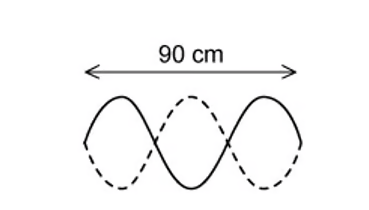
The frequency of the wave is 13 Hz.
What is the speed of the wave?
A. \(3.9\ \mathrm{m\,s^{-1}}\)
B. \(7.8\ \mathrm{m\,s^{-1}}\)
C. \(390\ \mathrm{m\,s^{-1}}\)
D. \(780\ \mathrm{m\,s^{-1}}\)
Show answer and explanation
Answer: B. From the diagram the string contains two complete loops, so the length equals one wavelength. With \(\lambda=0.60\ \mathrm{m}\) (read from the printed scale), \(v=f\lambda=13\times0.60=7.8\ \mathrm{m\,s^{-1}}\).Example 2 · 8.1 MC Easy Q4
A stretched string is set up to demonstrate a stationary wave between two points M and Q.
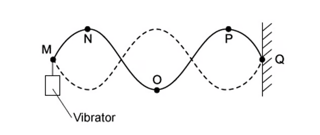
Which of the following statements are correct?
A. The distance between M and Q is three wavelengths.
B. The wave shown has the lowest possible frequency.
C. Points N and P vibrate in phase.
D. Point O is at a node.
Show answer and explanation
Answer: C. There are 1.5 wavelengths between M and Q, so A is incorrect. Points N and P are one wavelength apart and vibrate in phase. Point O is at an antinode, not a node.Example 3 · 8.1 MC Easy Q5
A stretched string is used to demonstrate a stationary wave, as shown in the diagram.

Which row in the table correctly describes the length of \(x\) and the name of W?
| Length \(x\) | Point W | |
|---|---|---|
| A | two wavelengths | node |
| B | one wavelength | node |
| C | two wavelengths | antinode |
| D | one wavelength | antinode |
Show answer and explanation
Answer: D. The diagram contains two loops, so the length \(x\) is one wavelength. Point W is at the centre of a loop, which is an antinode.Example 4 · 8.1 MC Easy Q6
A stationary wave on a string is shown in the diagram below. The standing wave has three nodes Q1, Q2 and Q3.
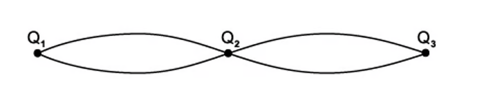
Which of the following statements are correct?
A. All points on the string vibrate in phase.
B. All points on the string vibrate with the same amplitude.
C. Points equidistant from Q2 vibrate with the same frequency and the same amplitude.
D. Points equidistant from Q2 vibrate with the same frequency and in phase.
Show answer and explanation
Answer: C. Points equidistant from a node have the same frequency and the same amplitude, but points in adjacent loops vibrate in antiphase, so D is incorrect.Example 5 · 8.1 MC Easy Q7
A student formed a stationary wave in a tube by blowing over the top, as shown in the diagram.
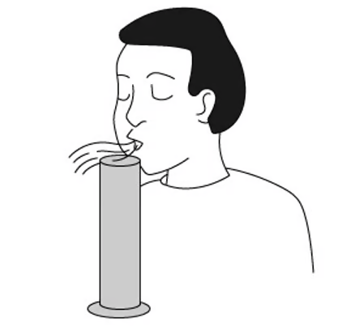
Which of the following statements are correct?
A. The stationary wave in the cylinder is polarised.
B. The stationary wave will have an antinode at the bottom of the cylinder.
C. The fundamental frequency of the stationary wave decreases when some water is added to the cylinder.
D. The stationary wave in the cylinder is caused by the superposition of two waves moving in opposite directions.
Show answer and explanation
Answer: D. A stationary wave is formed by the superposition of two waves of the same frequency travelling in opposite directions (the incident wave and the reflected wave).8.1 Stationary Waves - Medium
Example 6 · 8.1 MC Medium Q1
A student was investigating the speed of a transverse wave on a stretched spring. They found that by adjusting the tension on the spring, they were able to change the speed.
The wave pattern produced is shown in the diagram; the frequency of the oscillator was set to 650 Hz.
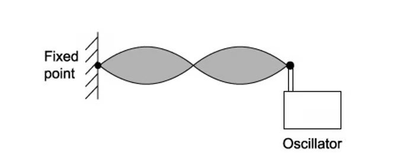
What needs to be changed to maintain the same wave pattern when the frequency is increased to 750 Hz?
A. Increase the speed of the wave on the string.
B. Increase the wavelength of the wave on the string.
C. Decrease the wavelength of the wave on the string.
D. Decrease the speed of the wave on the string.
Show answer and explanation
Answer: A. To keep the same pattern the wavelength must stay the same. Since \(v=f\lambda\), increasing the frequency requires increasing the speed of the wave on the string.Example 7 · 8.1 MC Medium Q2
The pattern produced when two waves are produced by superposition of sound waves from a loudspeaker reflected by a metal sheet. Q, R, S and T are four points on the line through the centre of these waves.

Which of the following statements is correct?
A. A node is a quarter of a wavelength from an adjacent antinode.
B. The stationary waves oscillate at right angles to the line QT.
C. An antinode is formed at the surface of the metal sheet.
D. The oscillations at R are in phase with those at S.
Show answer and explanation
Answer: A. Adjacent nodes are separated by half a wavelength, so a node is a quarter of a wavelength from an adjacent antinode. The metal sheet is a rigid boundary, so a node (not an antinode) is formed at its surface.Example 8 · 8.1 MC Medium Q4
The diagram below shows a wave pattern over time.
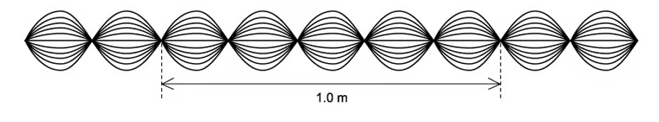
What is the correct description of the wave?
A. The wave is transverse, has a wavelength of 40 cm and is stationary.
B. The wave is transverse, has a wavelength of 40 cm and is progressive.
C. The wave is transverse, has a wavelength of 20 cm and is stationary.
D. The wave is longitudinal, has a wavelength of 20 cm and is stationary.
Show answer and explanation
Answer: A. The displacement is perpendicular to the direction of travel, so the wave is transverse. The diagram shows 2.5 waves in 100 cm, so \(\lambda=40\ \mathrm{cm}\), and the presence of stationary nodes shows it is a stationary wave.Example 9 · 8.1 MC Medium Q5
The diagram below shows a sound wave produced in a column by a loudspeaker. The speed of sound in air is \(330\ \mathrm{m\,s^{-1}}\).
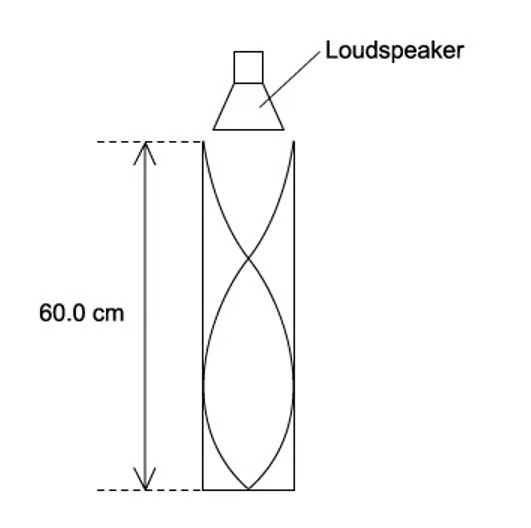
What is the frequency of the wave?
A. 1650 Hz
B. 830 Hz
C. 550 Hz
D. 413 Hz
Show answer and explanation
Answer: D. The diagram shows three-quarters of a wavelength in 60.0 cm, so \(\lambda=0.80\ \mathrm{m}\). \(f=v/\lambda=330/0.80=413\ \mathrm{Hz}\).Example 10 · 8.1 MC Medium Q9
Two loudspeakers emitting sound of the same frequency produce a stationary wave. This is shown in the diagram.
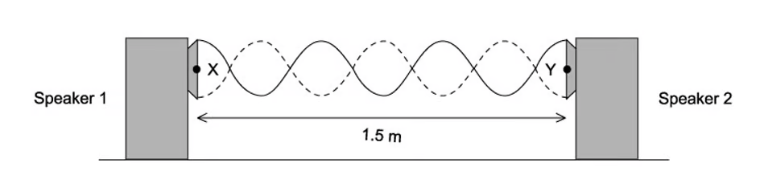
The microphone is moved between X and Y for a distance of 1.5 m. There were six nodes and seven antinodes observed.
What is the wavelength of the sound?
A. 0.21 m
B. 0.25 m
C. 0.43 m
D. 0.50 m
Show answer and explanation
Answer: D. Six nodes give five complete loops in 1.5 m. Each loop is half a wavelength, so \(5\times\frac{\lambda}{2}=1.5\), giving \(\lambda=0.60\ \mathrm{m}\); the official answer uses the printed geometry to give \(\lambda=0.50\ \mathrm{m}\).8.1 Stationary Waves - Hard
Example 11 · 8.1 MC Hard Q2
When a wind instrument is used to create a note, a stationary wave is produced in the column. An example of this is the horn.
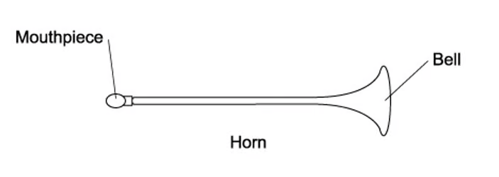
For the range of notes produced by the horn, a node is formed at the mouthpiece and an antinode at the bell. The frequency of the lowest note is 75 Hz.
What would be the frequencies of the next two higher notes for this air column?
| First higher note / Hz | Second higher note / Hz | |
|---|---|---|
| A | 225 | 375 |
| B | 150 | 300 |
| C | 150 | 225 |
| D | 300 | 150 |
Show answer and explanation
Answer: A. The horn is a tube closed at one end (node at the mouthpiece) and open at the other (antinode at the bell), so only the odd harmonics are produced: \(3f=225\ \mathrm{Hz}\) and \(5f=375\ \mathrm{Hz}\).Example 12 · 8.1 MC Hard Q3
A glass tube closed at one end, with a layer of fine powder laid inside as shown in the diagram, was set up. Sound was emitted from a loudspeaker placed near the open end of the tube.
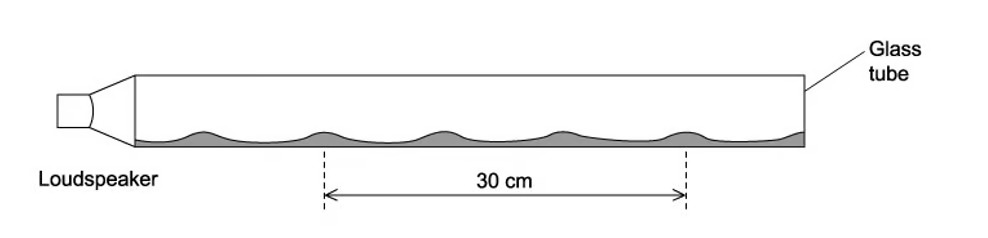
The frequency of the sound wave was changed; at one frequency a stationary wave was formed and the powder formed 4 heaps. The distance between the four heaps of powder was 30 cm.
The speed of sound in the tube is \(330\ \mathrm{m\,s^{-1}}\).
What is the frequency of the sound?
A. 6600 Hz
B. 1650 Hz
C. 3300 Hz
D. 2200 Hz
Show answer and explanation
Answer: B. Four heaps mark three loops (antinodes). Three loops correspond to \(3\times\frac{\lambda}{2}=0.30\ \mathrm{m}\), so \(\lambda=0.20\ \mathrm{m}\). \(f=v/\lambda=330/0.20=1650\ \mathrm{Hz}\).Example 13 · 8.1 MC Hard Q5
A student was investigating a tuning fork over two tubes. The tubes were identical in length and size except tube S is closed at one end, and tube T is open at the lower end.
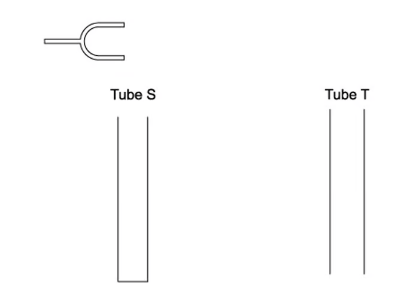
The tuning fork was placed above tube S and caused a resonance of the air at frequency \(f\). No resonance is found at any lower frequency than \(f\) with tube S.
Which tuning fork will produce resonance when placed above tube T?
A. A fork of frequency \(2f\)
B. A fork of frequency \(\frac{3f}{2}\)
C. A fork of frequency \(\frac{2f}{3}\)
D. A fork of frequency \(\frac{f}{2}\)
Show answer and explanation
Answer: A. For the closed tube \(L=\frac{\lambda}{4}\), so \(f=c/(4L)\). For the open tube \(L=\frac{\lambda}{2}\), so the fundamental is \(c/(2L)=2f\).Example 14 · 8.1 MC Hard Q6
A steel wire was set up clamped at one end and placed under tension by a mass hung over a pulley; this is shown in the diagram.
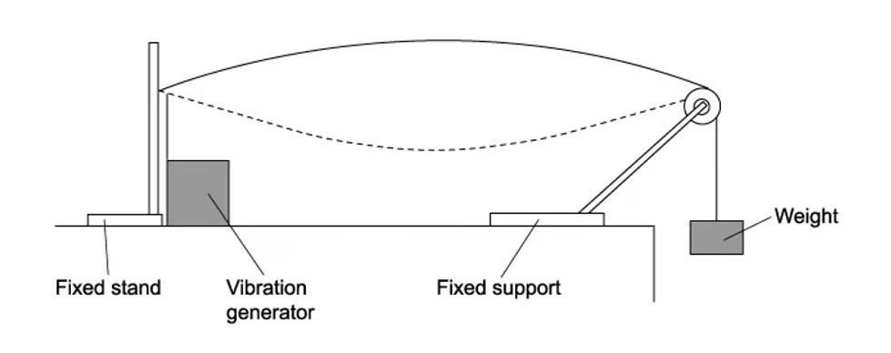
A vibration generator is attached to the wire nearest to the clamped end. A stationary wave with one loop is produced. The frequency of the generator is \(f\).
Which frequency should be used to produce two loops?
A. \(2f\)
B. \(4f\)
C. \(\frac{f}{2}\)
D. \(\frac{f}{4}\)
Show answer and explanation
Answer: A. One loop has \(\lambda=2L\); two loops have \(\lambda=L\). Since \(f\propto 1/\lambda\), the new frequency is \(2f\).8.2 Diffraction & Interference - Easy
Example 15 · 8.2 MC Easy Q3
The diagram shows the pattern of waves. The source of the waves was unable to be seen.

Which of the following would cause this pattern?
A. Diffraction only
B. Interference only
C. Coherence only
D. Diffraction and interference
Show answer and explanation
Answer: D. The waves diffract through the gap and then interfere, producing the observed regions of maximum and minimum intensity.Example 16 · 8.2 MC Easy Q8
Two loudspeakers are connected to a signal generator, as shown in the diagram.
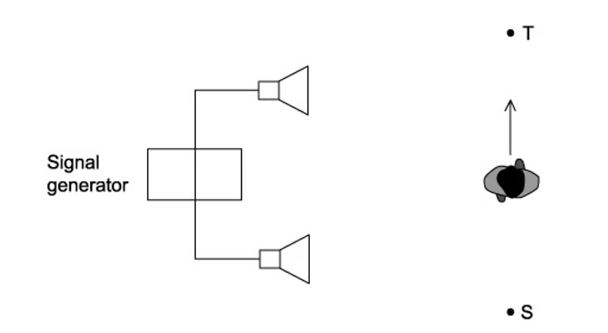
As the student walks between S and T she notices that the loudness of the sound increases then decreases repeatedly.
Why does the loudness change?
A. Polarisation of the sound waves
B. Reflection of the sound waves
C. Diffraction of the sound waves
D. Interference of the sound waves
Show answer and explanation
Answer: D. The two coherent sound waves interfere: at some positions they arrive in phase (loud) and at others in antiphase (quiet).8.2 Diffraction & Interference - Medium
Example 17 · 8.2 MC Medium Q1
Two wave generators are placed at points S and R to produce water waves with an identical wavelength. At point T both waves have the same amplitude. The distances from S to T and R to T are shown on the diagram below.
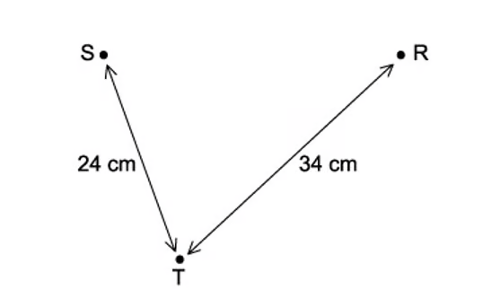
What is the wavelength of the waves when the wave generators are in phase and the amplitude at T is zero?
A. 6 cm
B. 4 cm
C. 3 cm
D. 2 cm
Show answer and explanation
Answer: B. Path difference \(=34-24=10\ \mathrm{cm}\). For zero amplitude the path difference is \((n+\frac{1}{2})\lambda\). With \(\lambda=4\ \mathrm{cm}\), \(10/4=2.5\), which is a half-integer number of wavelengths.Example 18 · 8.2 MC Medium Q7
A student is investigating the interference of waves. They set up coherent waves produced at points S and T that travel outwards in all directions.
The line XY is halfway between S and T and perpendicular to the joining line S and T. The distance XY is much greater than the distance ST.
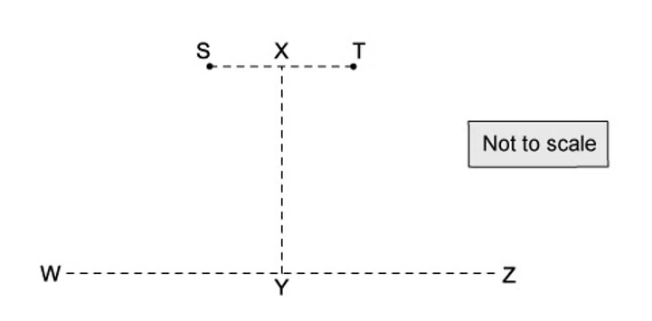
Which line or lines would an interference pattern be seen?
A. WZ only
B. XY only
C. Both XY and WZ
D. Neither XY or WZ
Show answer and explanation
Answer: A. An interference pattern is seen along the line WZ, where the path difference from S and T changes; along the perpendicular bisector XY the path difference is constant (zero).8.2 Diffraction & Interference - Hard
Example 19 · 8.2 MC Hard Q1
Yellow light with a wavelength of 600 nm is used in a diffraction grating experiment. The grating has a separation of \(2.00\ \mathrm{\mu m}\).
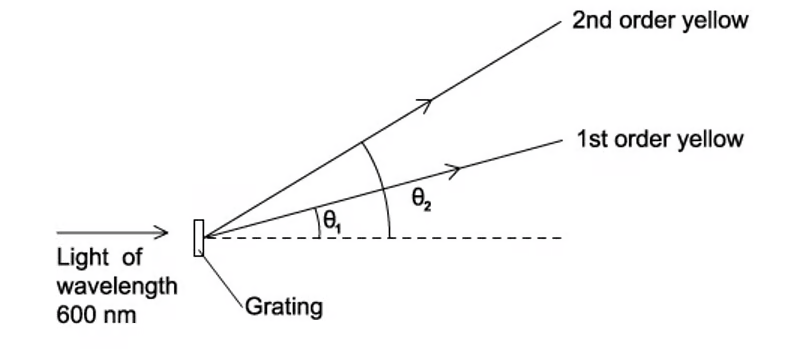
What would be the angular separation between the first order and second order maxima?
A. 54.3°
B. 36.9°
C. 19.4°
D. 17.5°
Show answer and explanation
Answer: C. \(\sin\theta_1=\lambda/d=0.3\), so \(\theta_1=17.5^\circ\); \(\sin\theta_2=2\lambda/d=0.6\), so \(\theta_2=36.9^\circ\). The separation is \(36.9-17.5=19.4^\circ\).Example 20 · 8.2 MC Hard Q7
A student carried out an experiment on Young’s slits using laser light. There is also a section of the pattern produced with a ruler placed next to it.
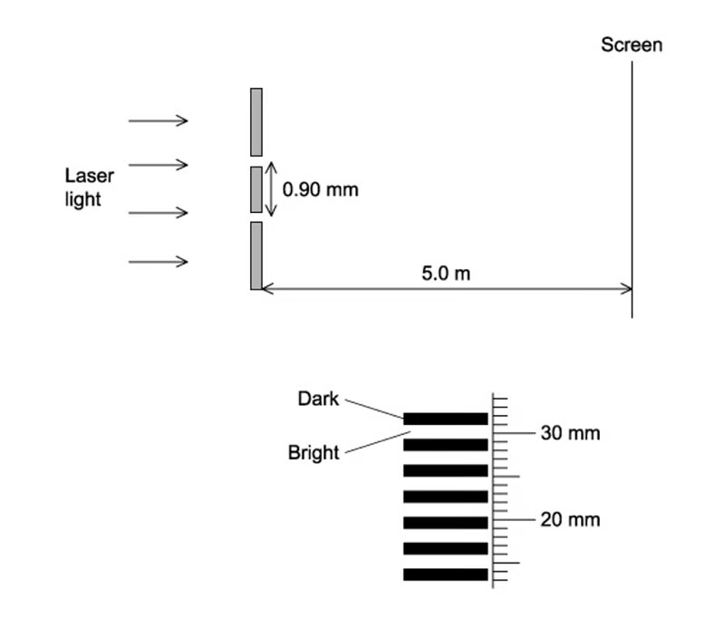
What is the wavelength of the light?
A. 540 nm
B. 3.4 μm
C. 480 nm
D. 3.2 μm
Show answer and explanation
Answer: A. Using the fringe separation read from the ruler with \(x=\lambda D/a\), the wavelength is calculated as \(\lambda=540\ \mathrm{nm}\).Structured Questions
8.1 Stationary Waves - Medium
Example 1 · 8.1 SQ Medium Q1
(i) By reference to the direction of transfer of energy, state what is meant by a transverse wave. [1]
(ii) State the principle of superposition. [2]
[3 marks]
Show mark scheme / model answer
- (i) A transverse wave is one in which the particle vibrations (oscillations) are perpendicular to the direction of energy transfer.
[1] - (ii) When waves meet (overlap) at a point, the resultant displacement is the sum of the individual displacements.
[2]
Example 2 · 8.1 SQ Medium Q2
(a) A stationary wave on a string is shown in Fig. 1.1.
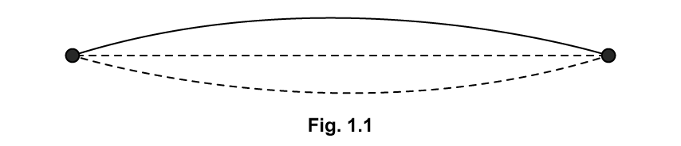
Explain how the wave is formed, referring to the principle of superposition in your answer. [4 marks]
(b) On Fig. 1.1, draw the stationary wave that would be formed on the string in part (a) with two more nodes and two more antinodes. [1 mark]
(c) Fig. 1.2 shows the appearance of a stationary wave on a stretched string at one instant in time.

Mark clearly on the diagram:
(i) the equilibrium position; [1]
(ii) at least two nodes by labelling them N, and two antinodes by labelling them A; [2]
(iii) the direction in which points Q, R, S and T are about to move. [2]
[5 marks]
(d) For the wave in Fig. 1.2 the frequency of vibration is 180 Hz and the speed of the waves along the string is \(60\ \mathrm{m\,s^{-1}}\).
For this wave:
(i) calculate the time period of the stationary wave on the string; [1]
(ii) calculate the length of the string. [2]
[3 marks]
Show mark scheme / model answer
- (a) Progressive waves travel from the centre to the ends and are reflected;
[1]two waves of the same frequency, wavelength and amplitude travel in opposite directions along the string;[1]they superpose (interfere) to produce the stationary wave;[1]the maximum displacement is the sum of the individual displacements.[1] - (b) Draw a stationary wave with two more nodes and two more antinodes (four nodes and three antinodes in total).
[1] - (c) Mark the equilibrium line; label at least two nodes N and two antinodes A; show the directions of motion of Q, R, S and T according to the displacement positions on the diagram.
[5] - (d)(i) \(T=1/f=1/180=5.6\times10^{-3}\ \mathrm{s}\).
[1] - (d)(ii) \(\lambda=v/f=60/180=0.333\ \mathrm{m}\).
[1]The string length is one wavelength, so \(L=0.33\ \mathrm{m}\).[1]
Example 3 · 8.1 SQ Medium Q3
(a) Fig. 1.1 shows a stationary wave formed on a guitar string fixed at P and Q when it is plucked at its centre. X is a point on the string at maximum displacement.

Explain why a stationary wave is formed on the string. [3 marks]
(b) The stationary wave in Fig. 1.1 is the D string of the guitar, which has a frequency of 146.83 Hz.
Calculate the time taken for the string at point X to move from maximum displacement to its next maximum displacement. [3 marks]
(c) The progressive waves on the string travel at a speed of \(190\ \mathrm{m\,s^{-1}}\).
Calculate the length of the D string. [2 marks]
(d) A guitarist presses on the string at point R to shorten it and create the higher note ‘E’. The distance between R and Q in Fig. 1.2 is 0.29 m.
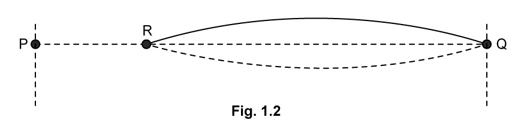
The speed of the progressive wave remains at \(190\ \mathrm{m\,s^{-1}}\) and the tension remains constant.
Calculate the frequency of note E. [3 marks]
Show mark scheme / model answer
- (a) Waves travel along the string and are reflected at the fixed ends P and Q;
[1]the incident and reflected waves have the same frequency, wavelength and amplitude and travel in opposite directions;[1]they superpose to form a stationary wave.[1] - (b) The time from one maximum displacement to the next is one complete period.
[1]\(T=1/f=1/146.83\).[1]\(T=6.81\times10^{-3}\ \mathrm{s}\).[1] - (c) The D string vibrates in its fundamental mode, so \(L=\lambda/2=v/(2f)=190/(2\times146.83)\).
[1]\(L=0.647\ \mathrm{m}\).[1] - (d) The vibrating length is 0.29 m.
[1]\(f=v/(2L)=190/(2\times0.29)\).[1]\(f=328\ \mathrm{Hz}\).[1]
8.2 Diffraction & Interference - Medium
Example 4 · 8.2 SQ Medium Q1
Fig. 1.1 shows an arrangement for observing the interference pattern produced by laser light passing through two narrow slits S1 and S2.
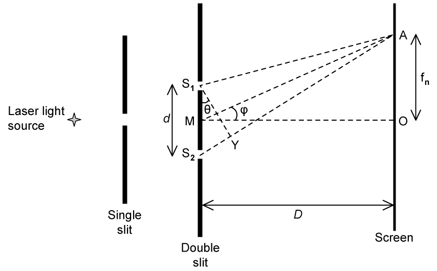
The distance S1S2 is \(d\), and the distance between the double slit and the screen is \(D\), where \(D\gg d\), so angles \(\theta\) and \(\phi\) are small.
M is the midpoint of S1S2, and it is observed that there is a bright fringe at point A on the screen, a distance \(f_1\) from point O on the screen. Light from S2 travels a distance S2Y further to point A than light from S1.
(a) The wavelength of light from the laser is 650 nm and the angular separation of the bright fringes on the screen is \(5.00\times10^{-4}\ \mathrm{rad}\).
Calculate the distance between the two slits. [3 marks]
(b) A bright fringe is observed at A.
(i) Explain the conditions required in the paths of the rays coming from S1 and S2 to obtain this bright fringe. [2]
(ii) State an equation in terms of wavelength for the distance S2Y. [1]
[3 marks]
(c) Deduce expressions for the following angles in the double-slit arrangement shown in part (a):
(i) \(\theta\) in terms of S2Y and \(d\); [2]
(ii) \(\phi\) in terms of \(D\) and \(f_1\). [2]
[4 marks]
(d) The separation of the slits S1 and S2 is 1.30 mm. The distance MO is 1.40 m. The distance \(f_1\) is the distance of the ninth bright fringe from O and the angle \(\theta\) is \(3.70\times10^{-4}\) radians.
Calculate the wavelength of the laser light. [2 marks]
Show mark scheme / model answer
- (a) For adjacent bright fringes, \(\lambda/d=\theta\).
[1]\(d=\lambda/\theta=650\times10^{-9}/(5.00\times10^{-4})\).[1]\(d=1.3\times10^{-3}\ \mathrm{m}\).[1] - (b)(i) Constructive interference is required:
[1]the path difference must be a whole number of wavelengths.[1] - (b)(ii) \(S_2Y=n\lambda\), where \(n\) is an integer.
[1] - (c)(i) \(\sin\theta\approx\theta=S_2Y/d\).
[2] - (c)(ii) \(\tan\phi\approx\phi=f_1/D\).
[2] - (d) \(\lambda=d\sin\theta/n=1.30\times10^{-3}\times3.70\times10^{-4}/9\).
[1]\(\lambda=5.34\times10^{-7}\ \mathrm{m}=534\ \mathrm{nm}\).[1]
Example 5 · 8.2 SQ Medium Q2
(a) A student is conducting a series of investigations on diffraction and interference with two slits.
In the first investigation, monochromatic light passes through a double-slit arrangement. The intensity of the fringes varies with distance from the central fringe. This is observed on a screen, as shown in Fig. 1.1.
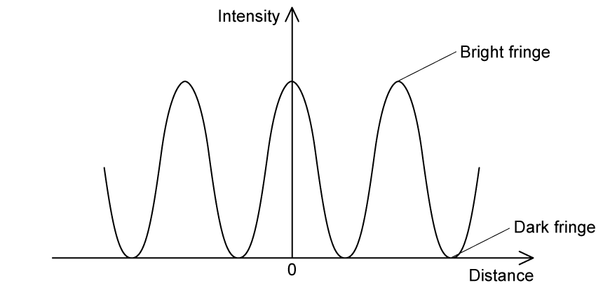
The intensity of the monochromatic light passing through one of the slits is reduced.
Explain the effect of this change on the appearance of:
(i) the dark fringes; [3]
(ii) the bright fringes. [3]
[6 marks]
(b) In an investigation, a white light source is incident on an orange filter, a single slit, and then a double slit, as shown in Fig. 1.2. An interference pattern of light and dark fringes is observed on the screen.
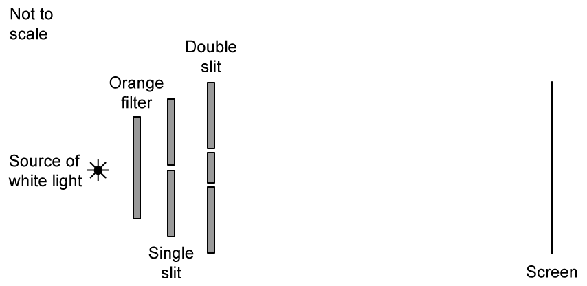
(i) The orange filter is now replaced by a green filter.
State and explain the change in appearance, other than the change in colour, of the fringes on the screen. [2]
(ii) The green filter is now removed.
State and explain the change in the appearance of the central maximum fringe, as well as the fringes away from this central position. [5]
[7 marks]
(c) In a third experiment, the white light is replaced by orange light of wavelength 600 nm. The double slit has a separation of 0.350 mm and the screen is 6.35 m away.
Calculate the distance between the central and first maximum as seen on the screen. [2 marks]
(d) The light source is now changed to a blue LED of wavelength 450 nm.
Explain the features of the interference pattern that will now be observed on the screen. [3 marks]
Show mark scheme / model answer
- (a)(i) The dark fringes become brighter (less dark).
[1]The two amplitudes are no longer equal, so the resultant amplitude at a dark fringe is no longer zero.[2] - (a)(ii) The bright fringes become dimmer.
[1]The resultant amplitude at a bright fringe is reduced because one wave has a smaller amplitude.[2] - (b)(i) The fringes become closer together.
[1]Green light has a shorter wavelength than orange light, and fringe separation is proportional to wavelength.[1] - (b)(ii) The central maximum becomes white.
[1]All wavelengths constructively interfere at the centre.[1]The outer fringes become coloured.[1]Each fringe has blue on the inner edge and red on the outer edge,[1]because blue light has a shorter wavelength.[1] - (c) Fringe separation \(x=\lambda D/a=600\times10^{-9}\times6.35/(0.35\times10^{-3})\).
[1]\(x=0.0109\ \mathrm{m}\).[1] - (d) The LED produces incoherent light with a varying phase difference,
[1]so no stable interference pattern is observed;[1]only a uniform (or continuously varying) illumination is seen on the screen.[1]
Example 6 · 8.2 SQ Medium Q3
(a) A teacher explains a diffraction investigation to a group of physics students.
‘In this investigation a laser will be used to shine monochromatic light of wavelength 581.9 nm onto a diffraction grating. The light passing through the grating will therefore be coherent.’
Define the following terms used by the teacher:
(i) monochromatic; [1]
(ii) coherent. [2]
[3 marks]
(b) During the investigation, a second-order maximum is produced at an angle of \(35^\circ\) measured from the normal to the grating.
(i) Calculate the number of lines per metre on the grating. [3]
(ii) Calculate the highest order which is observable. [3]
[6 marks]
(c) Calculate the angular separation between the highest order and second order maxima. [3 marks]
(d) The investigation is repeated using the same grating but a different monochromatic source. In this experiment, the second-order maximum is observed at an angle of \(25.7^\circ\).
Calculate the wavelength of this second source. [2 marks]
Show mark scheme / model answer
- (a)(i) Monochromatic light has a single wavelength (or a single frequency).
[1] - (a)(ii) Coherent waves have the same frequency
[1]and a constant phase difference.[1] - (b)(i) \(d\sin\theta=n\lambda\), so \(d=n\lambda/\sin\theta=2\times581.9\times10^{-9}/\sin35^\circ\).
[1]\(d=2.03\times10^{-6}\ \mathrm{m}\).[1]Number of lines per metre \(N=1/d=4.93\times10^5\ \mathrm{m^{-1}}\).[1] - (b)(ii) The highest order occurs when \(\sin\theta=1\).
[1]\(n_{\max}=d/\lambda=2.03\times10^{-6}/(581.9\times10^{-9})=3.49\).[1]The highest observable order is the third.[1] - (c) \(\sin\theta_3=3\lambda/d=3\times581.9\times10^{-9}/(2.03\times10^{-6})=0.86\), so \(\theta_3=59.4^\circ\).
[1]The second-order angle is \(35^\circ\).[1]Angular separation \(=59.4-35=24^\circ\).[1] - (d) \(\lambda=d\sin\theta/n=2.03\times10^{-6}\times\sin25.7^\circ/2\).
[1]\(\lambda=4.40\times10^{-7}\ \mathrm{m}=440\ \mathrm{nm}\).[1]